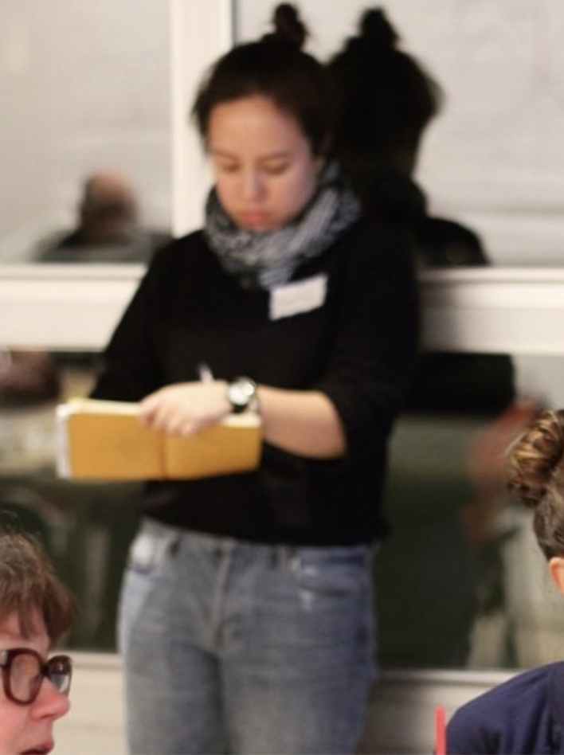

Shine Registry is a platform for women starting businesses to ask for what they need in the style of a wedding registry. Because if you can ask for a gravy boat when you get married you should be able to ask for what you need when you start your company too. This includes non-monetary asks like social media engagement, network connections and skill-based volunteering for things like marketing or developer hours. All of these things listed are examples of what’s been fulfilled on www.shineregistry.com so far.
Emily is the Founder/CEO of Shine Registry.
Read more about how and why she’s doing this work here.
Exquisite Coloring is a collaborative art project Emily has been developing since 2017. It is inspired by the exquisite corpse drawing method, Chuck Close, and the solver tool in MS Excel. Follow this project on Instagram @exquisitecoloring.
Emily is involved with the organizing and development of the Forge Fellowship, an effort that honors her friend Reese Neader. The Forge Fellowship trains students in core policy, organizing, and base-building skills, and provides one-on-one guidance from Roosevelt Institute Network staff and alumni as they build organizing capacity in their communities and launch policy projects. A small army of Reese's friends are working to make each of the Forge Fellows feel eight feet tall. You can read more about them here.
Emily is an experienced facilitator with a background in social design and adult learning. She has designed and led trainings for a wide range of organizations including the Institute for Social Innovation at Carnegie Mellon, the Roosevelt Institute, Latham Street Commons and others. This has included leading groups in personal narrative development, introduction to prototyping and human centered design, and exercises in strengthening inclusive communities. Send Emily an e-mail if you or your organization is interested in working with her.

Reading this poem.
Making playlists for friends.
Learning to code a lil (she made this website you're looking at!)
{kind=link}